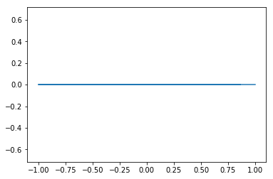
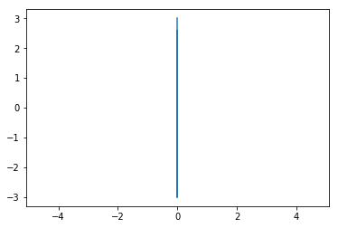
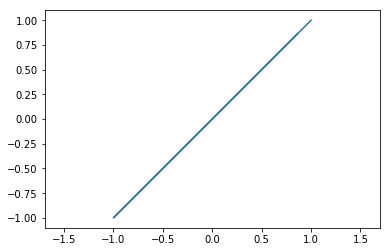
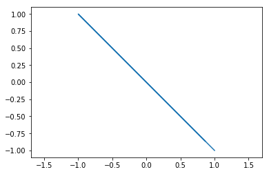
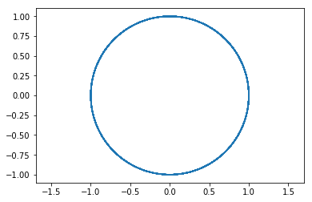
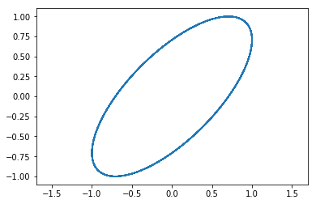
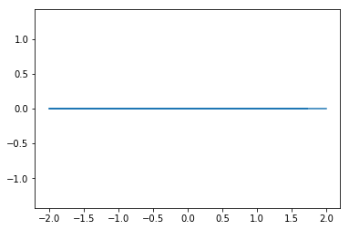
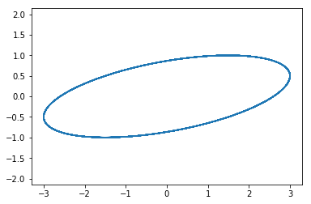

Check behaviour: Stokes.from_distribution¶
We have a definition that is not clear to us. We check that the function Stokes.from_distribution is working properly.
[73]:
import scipy as sp
import numpy as np
import matplotlib.pyplot as plt
[74]:
t=np.linspace(0,100,1000)
Definition¶
[75]:
def E_field(A1, A2, phase, has_draw=True):
w=1
Ex=A1*np.exp(-1j*(w*t))
Ey=A2*np.exp(-1j*(w*t+phase))
if has_draw:
plt.plot(Ex.real,Ey.real)
plt.axis('square');
plt.axis('equal')
return Ex, Ey
[112]:
def from_distribution(Ex,Ey, is_normalized=True):
"""Creates a 4x1 Stokes vector from a [Ex(t), Ey(t)] electric field.
Parameters:
Ex (numpy.array): Ex(t)
Ey (numpy.array): Ey(t)
is_normalized (bool): If True intensity is normalized
Returns:
S (4x1 numpy.matrix): Stokes vector (I, Q, U, V).
"""
S = np.matrix(np.array([[0.0], [0.0], [0.0], [0.0]]))
S[0] = (np.conjugate(Ex) * Ex + np.conjugate(Ey) * Ey).mean().real
S[1] = (np.conjugate(Ex) * Ex - np.conjugate(Ey) * Ey).mean().real
S[2] = 2 * (Ex * np.conjugate(Ey)).mean().real
S[3] = -2 * (Ex * np.conjugate(Ey)).mean().imag
if is_normalized:
S=S/S[0]
return S
[113]:
def from_distribution2(Ex,Ey, is_normalized=False):
"""Creates a 4x1 Stokes vector from a [Ex(t), Ey(t)] electric field.
Parameters:
Ex (numpy.array): Ex(t)
Ey (numpy.array): Ey(t)
is_normalized (bool): If True intensity is normalized
Returns:
S (4x1 numpy.matrix): Stokes vector (I, Q, U, V).
"""
S = np.matrix(np.array([[0.0], [0.0], [0.0], [0.0]]))
S[0] = (np.conjugate(Ex) * Ex + np.conjugate(Ey) * Ey).mean().real
S[1] = (np.conjugate(Ex) * Ex - np.conjugate(Ey) * Ey).mean().real
S[2] = (Ex * np.conjugate(Ey)+Ey*np.conjugate(Ex)).mean().real
S[3] = (1j*(Ex * np.conjugate(Ey)-Ey*np.conjugate(Ex)).mean()).real
if is_normalized:
S=S/S[0]
return S
Example 1: linear polarization¶
[114]:
Ex, Ey = E_field(1,0,0, has_draw=True)
r1=from_distribution(Ex,Ey, is_normalized=False)
r2=from_distribution2(Ex,Ey, is_normalized=False)
print(r1,'\n\n',r2)
[[ 1.]
[ 1.]
[ 0.]
[-0.]]
[[1.]
[1.]
[0.]
[0.]]

[115]:
Ex, Ey = E_field(0,3,0, has_draw=True)
r1=from_distribution(Ex,Ey, is_normalized=False)
r2=from_distribution2(Ex,Ey, is_normalized=False)
print(r1,'\n\n',r2)
[[ 9.]
[-9.]
[ 0.]
[-0.]]
[[ 9.]
[-9.]
[ 0.]
[ 0.]]

[116]:
Ex, Ey = E_field(1,1,0, has_draw=True)
r1=from_distribution(Ex,Ey, is_normalized=False)
r2=from_distribution2(Ex,Ey, is_normalized=False)
print(r1,'\n\n',r2)
[[ 2.]
[ 0.]
[ 2.]
[-0.]]
[[2.]
[0.]
[2.]
[0.]]

[117]:
Ex, Ey = E_field(1,-1,0, has_draw=True)
r1=from_distribution(Ex,Ey, is_normalized=False)
r2=from_distribution2(Ex,Ey, is_normalized=False)
print(r1,'\n\n',r2)
[[ 2.]
[ 0.]
[-2.]
[-0.]]
[[ 2.]
[ 0.]
[-2.]
[ 0.]]

Example 2: circular polarization¶
[119]:
Ex, Ey = E_field(1,1,np.pi/2, has_draw=True)
r1=from_distribution(Ex,Ey, is_normalized=False)
r2=from_distribution2(Ex,Ey, is_normalized=False)
print(r1,'\n\n',r2)
[[ 2.00000000e+00]
[ 3.21964677e-18]
[ 2.94388125e-15]
[-2.00000000e+00]]
[[ 2.00000000e+00]
[ 3.21964677e-18]
[ 2.94388125e-15]
[-2.00000000e+00]]

[120]:
Ex, Ey = E_field(1,1,-np.pi/2, has_draw=True)
r1=from_distribution(Ex,Ey, is_normalized=False)
r2=from_distribution2(Ex,Ey, is_normalized=False)
print(r1,'\n\n',r2)
[[2.00000000e+00]
[1.11022302e-19]
[2.68936428e-15]
[2.00000000e+00]]
[[2.00000000e+00]
[1.11022302e-19]
[2.68936428e-15]
[2.00000000e+00]]

[121]:
Ex, Ey = E_field(1,-1,np.pi/2, has_draw=True)
r1=from_distribution(Ex,Ey, is_normalized=False)
r2=from_distribution2(Ex,Ey, is_normalized=False)
print(r1,'\n\n',r2)
[[ 2.00000000e+00]
[ 3.21964677e-18]
[-2.94388125e-15]
[ 2.00000000e+00]]
[[ 2.00000000e+00]
[ 3.21964677e-18]
[-2.94388125e-15]
[ 2.00000000e+00]]
Elliptical¶
[122]:
Ex, Ey = E_field(1,1,np.pi/4, has_draw=True)
r1=from_distribution(Ex,Ey, is_normalized=False)
r2=from_distribution2(Ex,Ey, is_normalized=False)
print(r1,'\n\n',r2)
[[ 2.00000000e+00]
[ 2.77555756e-18]
[ 1.41421356e+00]
[-1.41421356e+00]]
[[ 2.00000000e+00]
[ 2.77555756e-18]
[ 1.41421356e+00]
[-1.41421356e+00]]

[123]:
Ex, Ey = E_field(2,0,np.pi/2, has_draw=True)
r1=from_distribution(Ex,Ey, is_normalized=False)
r2=from_distribution2(Ex,Ey, is_normalized=False)
print(r1,'\n\n',r2)
[[ 4.]
[ 4.]
[ 0.]
[-0.]]
[[4.]
[4.]
[0.]
[0.]]

[124]:
Ex, Ey = E_field(3,1,np.pi/3, has_draw=True)
r1=from_distribution(Ex,Ey, is_normalized=False)
r2=from_distribution2(Ex,Ey, is_normalized=False)
print(r1,'\n\n',r2)
[[10. ]
[ 8. ]
[ 3. ]
[-5.19615242]]
[[10. ]
[ 8. ]
[ 3. ]
[-5.19615242]]

[ ]: